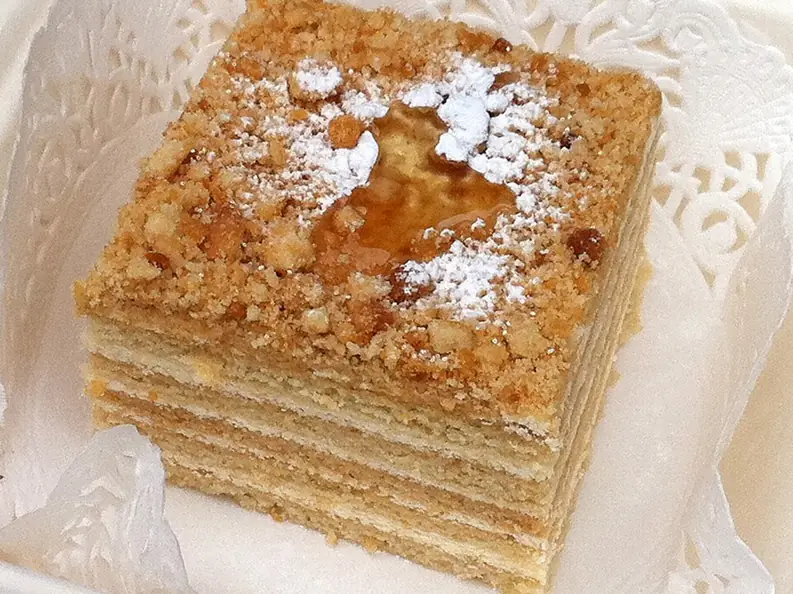

Фото: Edinburgh blog, CC BY 2.0

Медовик упрощённый
Медовый торт из тонких коржей со сметанным кремом без сложной заварки
120 мин10 порц.485 ккал на порциюБ 8 · Ж 20 · У 68Русская кухня
Продукты на 10 порц.
- Мёд3 ст. л.
- Сахар1,5 стак.
- Сливочное масло50 г
- Яйцо куриное2 шт
- Сода1 ч. л.
- Мука пшеничная2,5 стак.
- Сметана 20%700 г
- Ванильный сахар по желанию1 пакетик
Как готовить
- В кастрюльке на слабом огне растопите мёд, 150 г сахара и масло, помешивая, 3-4 минуты, до растворения сахара.
- Снимите с огня, всыпьте соду и быстро перемешайте: масса посветлеет и поднимется пеной. Остудите 5 минут и вбейте яйца по одному.
- Добавьте муку частями и замесите мягкое, чуть липкое тесто. Разделите на 6 частей.
- Каждую часть раскатайте на пергаменте тонко, 2-3 мм, и вырежьте круг по тарелке 22-24 см. Обрезки печёте рядом.
- Выпекайте каждый корж при 180 °C (средний жар) 4-5 минут до золотистого цвета. Горячие коржи легко двигать, остывшие ломаются.
- Для крема взбейте холодную сметану с оставшимся сахаром и ванильным сахаром 3-4 минуты, до растворения сахара.
- Соберите торт, щедро промазывая каждый корж кремом, обмажьте бока. Обрезки измельчите в крошку и обсыпьте торт.
- Уберите медовик в холодильник минимум на 8 часов, коржи должны стать мягкими.
Совет. Крема кажется много, но коржи впитывают его почти весь. Если пожалеть крем, торт останется сухим.